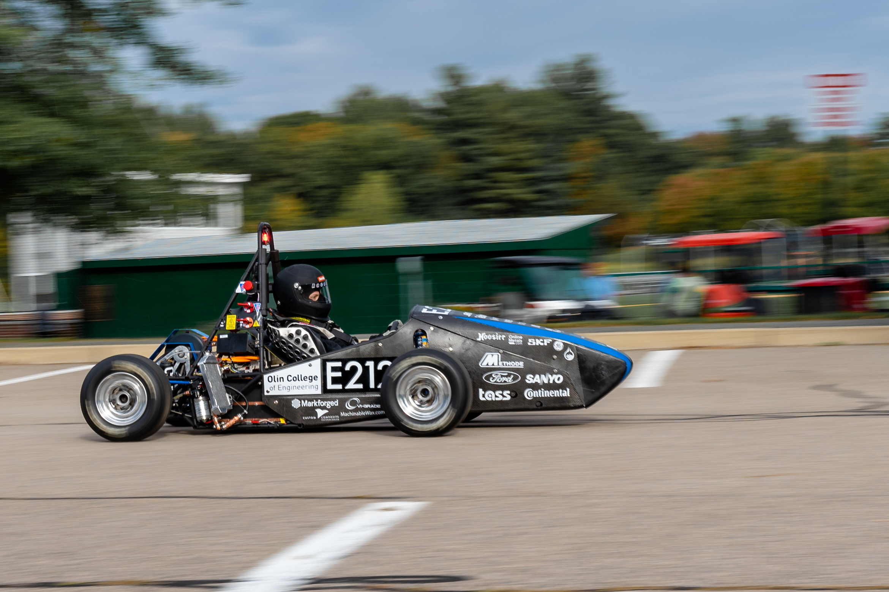
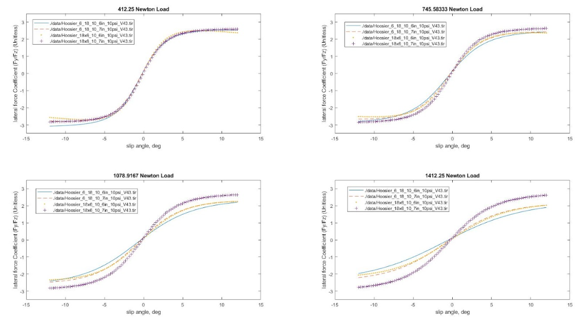
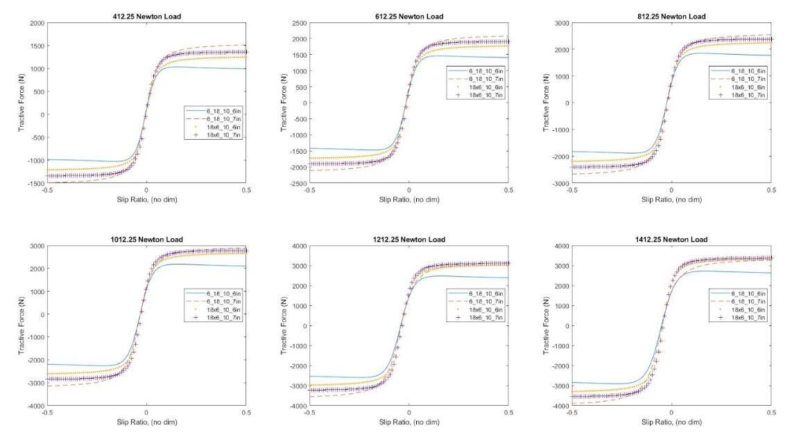
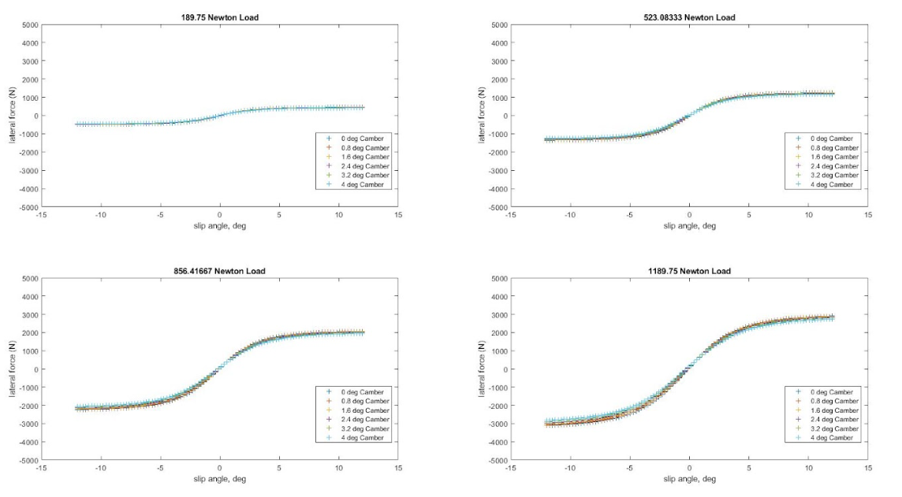
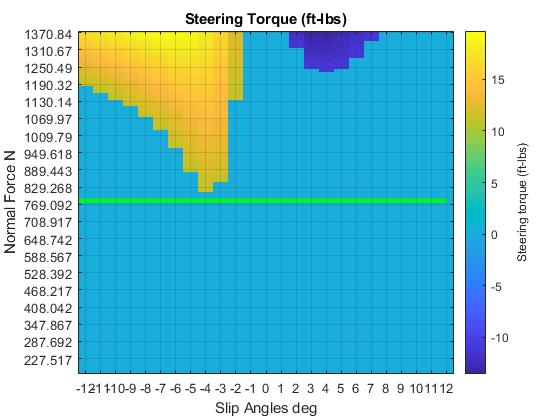
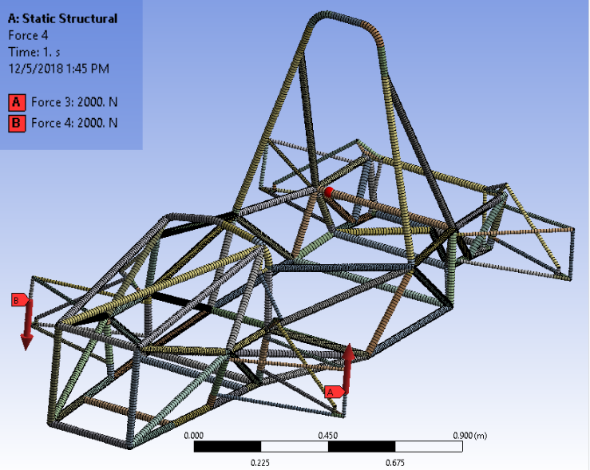
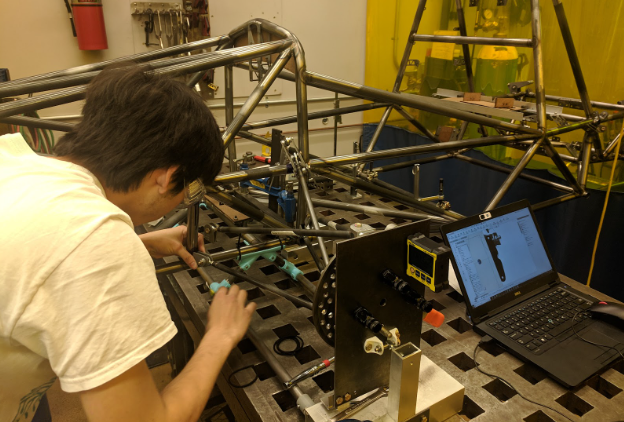

Each year, Olin Electric Motorsports designs and builds an electric race car as part of the Society of Automotive Engineer’s Formula Student collegiate design challenge. Designing the suspension and chassis for a racecar is a very challenging task. Suspension design requires a lot of specialized knowledge of automotive engineering best practices, and chassis design is an optimization problem in efficient packaging. Together, they form a very high dimensional design problem. Together with a couple of team mates, we tackled these twin problems in 2018-2019 season for Formula SAE.
 |
 |
| Our car at a sponsor demo event | The car on the first drive day in all its glory :) |
Research
In the summer before the start of the school year, my team met weekly to read and discuss Race Car Vehicle Dynamics (RCVD) by Milliken. We started from scratch and persisted through the very dense and technical literature to build up our foundational understanding before the start of the season. We focused on sections related to tire selection and suspension design and analysis.
Tire Selection
During the summer, we decided that we would reduce the size of our wheels from 13 inch rims down to 10 inch rims. Though the suspension design and packaging would become much harder, we would reduce the unsprung mass of our vehicle (mass not supported by the suspension) by around 40 pounds. Reducing unsprung mass dramatically improves handling of a vehicle, much more than the same reduction of sprung mass. Because of this, we needed to pick new, smaller tires to fit the rims. Tires are ultimately what generate all of the tractive and cornering force that propels a car forward, so making the right decision was critical.
I used MF-TYRE, a tire analysis package written by Seimens for Matlab to analyze publicly available tire data provided by the tire test consortium. We analyzed tire performance in a variety of vehicle conditions (varying normal force applied, slip angle, slip ratio, tire orientation/angle, vehicle velocity, etc) and picked the tires that would provide the best overall performance in terms of force generation. Below are sample plots we generated to visualize different tires and operating conditions.
 Lateral force coefficient (how well can the tires generate lateral force used to turn the car) as a function of slip angle for various applied forces and various tire compounds/sizes.  Tractive Force (longitudinal force used to move the car forward) as a function of slip ratio for various applied forces and various tire compounds/sizes.
 Lateral Force (used to turn the car) as a function of slip angle for various normal forces and camber angles. Camber is not a significant factor in lateral force generation.
Suspension Design
We applied what we learned reading RCVD to design the suspension geometry. We manually tuned the geometry to meet packaging requirements and targeted handling characteristics. We also relied on our tire analysis to understand the forces acting on the system. This allowed us to understand both structural aspects of the design, as well as human aspects. We quantified ergonomic impacts of various designs. The plot below for instance, illustrates the required steering torque for a given suspension for various operating conditions of the car. Areas in light blue are within ergonomic guidelines for driver torque we found in literature.

Chassis Design
We designed the chassis to meet rule requirements and to elegantly package all of the subsystems in the car. The largest performance gains can be through packaging improvements, reducing the overall size and weight of car. To validate the design, we analyzed the torsional rigidity of the chassis. Chasses tend to be least stiff in torsion given their aspect ratios, and having a chassis that is not stiff can reduce the handling of the vehicle and reduce the driver’s ability to feel connected to the road. Chasses are loaded in torsion due to differences in roll stiffness between the front and rear of the car. We ensured that our chassis was at least 10 times stiffer than our differential role rate.
|  |  |
| Setup to our torsional rigidity study in ansys | results |
Fabrication and Assembly
As mechanical lead, I spearheaded efforts for fabrication and assembly. Here are a few pictures from the fab process.
 |
 |
| Welding a tab to the chassis. I’m on the right! | That’s me setting up the welding jig |
 |
 |
| Chassis in the painting bay | That’s me doing the final assembly of the rear suspension at competition |